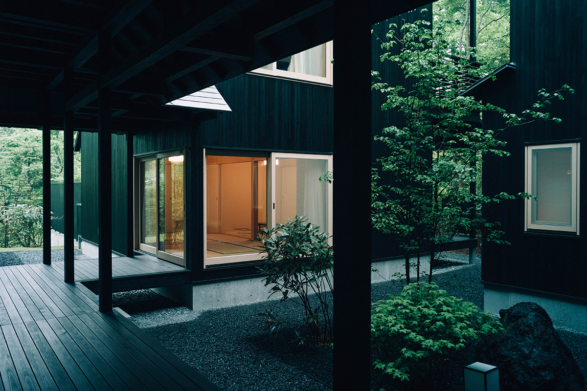
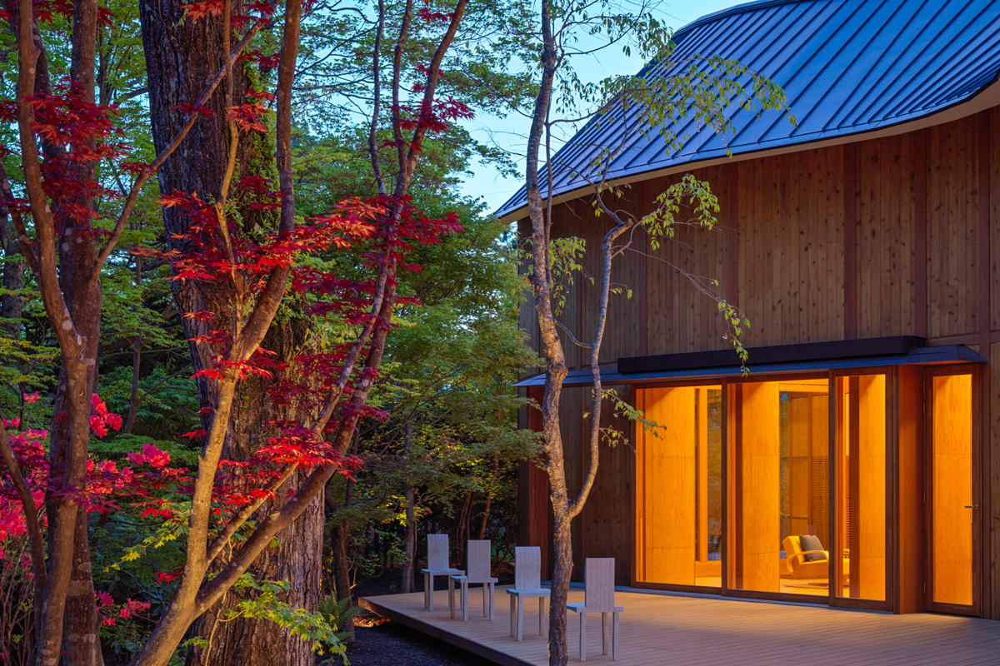
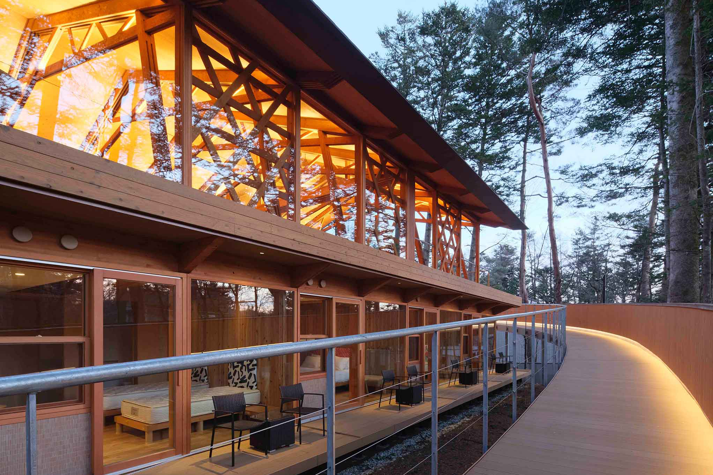
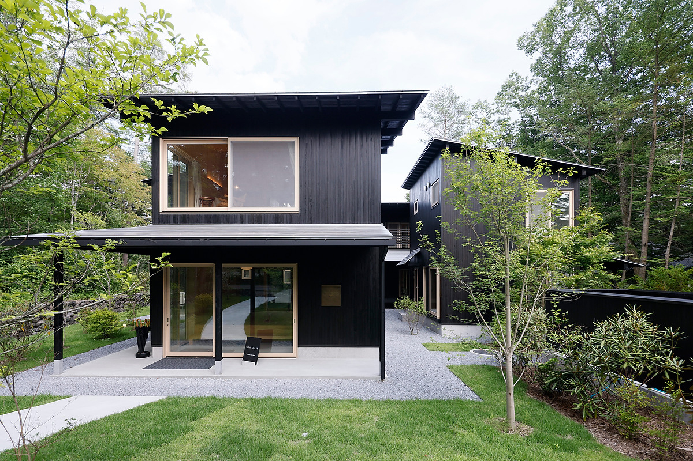
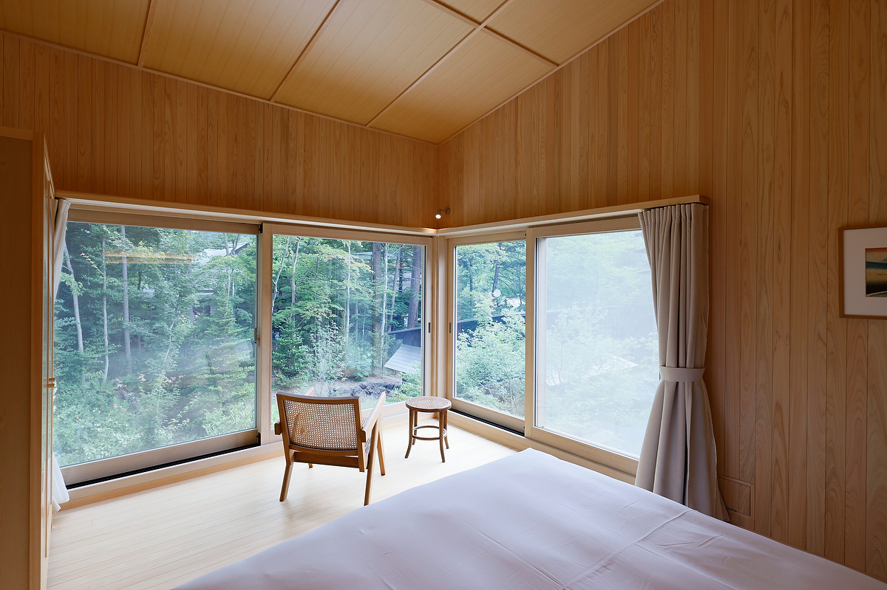

Префектура Нагано · Каруидзава · где остановиться
SHISHI-IWA-HOUSE: три дома двух лауреатов Притцкеровской премии в лесу Каруидзавы

В лесу Каруидзавы стоят три здания одного отеля, и каждое построил архитектор с Притцкеровской премией. Сюда едут не по пути куда-то, а ради самого пребывания: архитектуры, искусства, еды и тишины.
Место
Отель, ради которого стоит ехать
Каруидзава считается одним из первых дачных курортов Японии, и здесь давно сложилась утончённая культура. SHISHI-IWA-HOUSE (далее SSH) стоит в самой тихой и лесной части городка, в окружении национального парка Дзёсинъэцу-Когэн. Это коллекция из трёх зданий, и в каждом свой характер. SSH No.01 и SSH No.02 построил Сигэру Бан, а SSH No.03, открытый в 2023 году, спроектировал Рюэ Нисидзава. Оба архитектора получили Притцкеровскую премию, которую называют Нобелевской премией в архитектуре, и для обоих это первый в жизни проект отеля.
Отель задумывали как место для отдыха и восстановления, где современная архитектура, дизайн, искусство и кухня живут в согласии с природой. Три здания дают три очень разных способа провести здесь несколько дней.
Изгибы
SSH No.01: дом, который огибает деревья

SSH No.01 льнёт к деревьям и изгибается волной. Внутри много тёплого дерева криптомерии (японского кедра суги), а сдержанный, изящный минимализм доведён до мелочей: светильников, мебели, сделанной на заказ, и даже металлических дверных ручек. Здание построено мастерами высокого уровня и вписано в лес так, что кажется его частью.
Лес
SSH No.02: прогулка по воздушной галерее

Если первое здание состоит из изгибов, то SSH No.02 построено на прямых линиях. Главное в нём: открытый подход к зданию. Деревянный дом окружает галерея, поднятая над землёй, и она сливается с яркой зеленью соснового леса. Пройти по ней достаточно, чтобы проснулись все чувства.
В тихих номерах стоят ванны из японского кипариса хиноки, сделанные вручную, интерьер собран из природных материалов, а у каждого номера своя терраса, окружённая лесом, как пейзажной картиной. Такого глубокого покоя, который дают дом и ландшафт вместе, трудно найти где-то ещё.
Павильоны
SSH No.03: дань японскому дому

Самое новое здание, SSH No.03, устроено как группа павильонов: десять корпусов мягко связаны энгава, открытыми верандами вдоль дома, крытыми галереями и внутренними дворами. Террасы всех корпусов смотрят на двор. Рюэ Нисидзава отдал дань традиционному японскому жилому дому: размеры комнат подчинены мере татами, а в отделке видна работа плотников. Каждый номер стоит отдельно, но через энгава выходит прямо наружу, и простора в нём очень много.
Искусство и кухня
Картины, гравюры и французский ужин
По всем трём зданиям развешаны картины и гравюры художников с мировым именем. На кухне готовят по-французски, и завтрак, и ужин, из сезонных продуктов местных фермеров, а к столу предлагают редкие напитки. Архитектура, искусство и еда здесь вместе работают на одно: дать отдохнуть по-настоящему.

SHISHI-IWA-HOUSE
- Адрес
- префектура Нагано, уезд Китасаку, Каруидзава, Нагакура, 2147-768 (SSH No.01 и No.02); Нагакура, 2147-40 (SSH No.03)
- Телефон
- +81 267-31-6658
- Номера
- 34
- Заезд / выезд
- 15:00 / 11:00
- Цены / Вход
- от 41 745 иен за ночь с завтраком, с налогом и сервисным сбором (2023)
- Как добраться
- на машине около 20 минут от съезда Усуи-Каруидзава скоростной дороги Дзёсинъэцу; от станции JR Каруидзава около 10 минут на такси